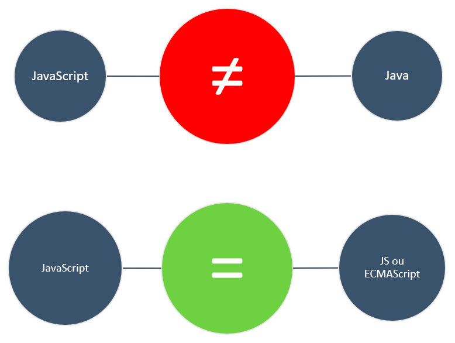
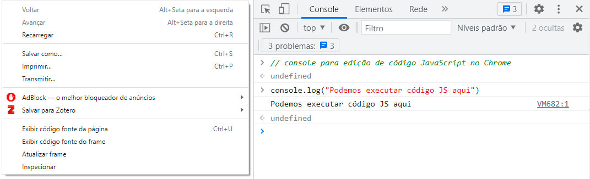
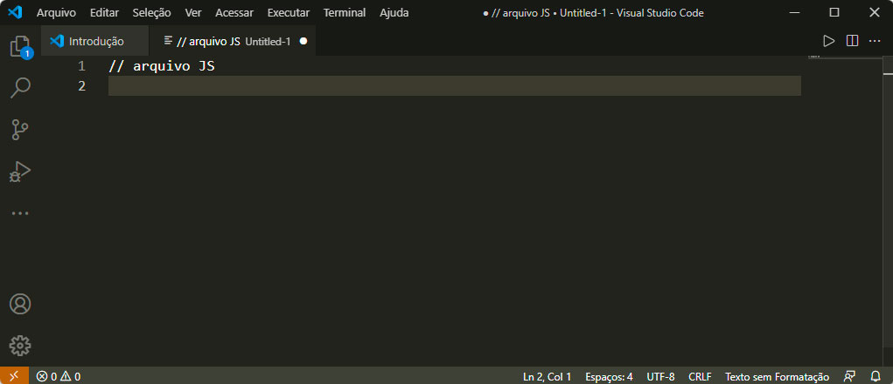
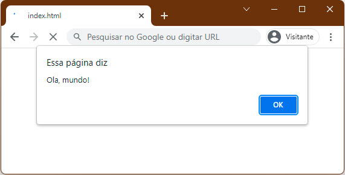
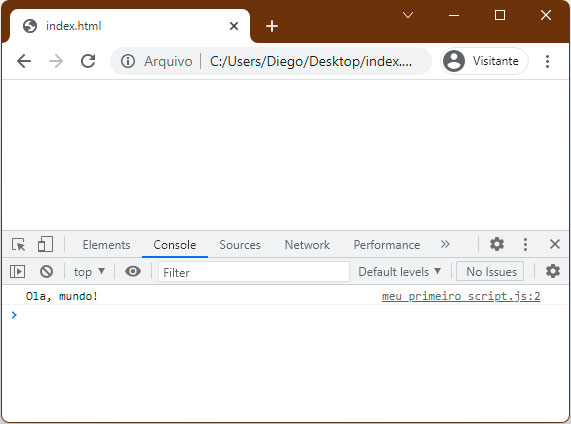
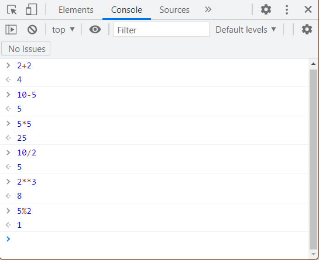
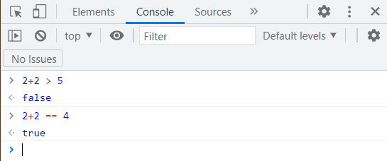

Bloco 01Introdução
Olá, estudante!
Nos dias atuais, o uso de aplicações web se tornou o padrão para grande parte dos sistemas empresariais, e isso se deve à facilidade de implementação desse tipo de sistema, à interoperabilidade e à fácil adaptação dos colaboradores, uma vez que o acesso é feito de maneira padronizada por navegadores web (browsers).
Nesse contexto, a necessidade de desenvolvedores de aplicações web proporcionou uma imensa demanda de profissionais de tecnologia da informação com conhecimento nas tecnologias web, como linguagens de marcação, de estilos e de programação. O JavaScript se enquadra nesta última categoria, sendo considerada uma linguagem vital para o desenvolvimento de sistemas dinâmicos e interativos.
Nos últimos anos, o JavaScript despontou como uma das principais linguagens de programação, com amplas aplicações em diversas áreas. Pronto para adentrar no mundo do desenvolvimento web? Então, vamos lá!
Ao final deste módulo você saberá executar um script JavaScript, declarar variáveis, reconhecer os tipos de dados da linguagem e combinar operadores aritméticos, de comparação e lógicos para construir expressões.
Bloco 02Tipos de dados e variáveis
JavaScript é uma linguagem de programação usada em aplicações web e considerada uma linguagem de scripts, interpretada, com tipagem dinâmica e fraca e com suporte à orientação a objetos (MARIANO; DE MELO-MINARDI, 2017). Além disso, ela possui uma sintaxe simples, o que contribuiu para que uma ampla comunidade de desenvolvedores se formasse. Em geral, JavaScript é utilizada em sinergia com as linguagens HTML e CSS para o desenvolvimento de websites e outros tipos de aplicações web (FLANAGAN, 2011).
A princípio, a linguagem JavaScript foi criada para ser executada em ambiente client-side, ou seja, a execução era feita diretamente nos navegadores web dos usuários. Ela surgiu como um complemento para as linguagens que executavam em back-end — diretamente nos servidores web remotos —, trazendo a possibilidade de páginas mais interativas. Recentemente, ferramentas como o Node.js têm permitido a execução do JavaScript também em ambiente back-end, o que tem ampliado ainda mais a popularidade da linguagem.
Uma breve história do JavaScript
A linguagem JavaScript foi proposta por Brendan Eich em meados dos anos 1990, visando torná-la uma linguagem de scripts para ser executada no navegador Netscape. A priori, a linguagem foi chamada de LiveScript, mas depois foi renomeada para JavaScript, uma vez que a empresa Netscape trabalhava em colaboração com a Sun Microsystems (empresa que mantinha a linguagem Java).
A escolha do nome foi apenas uma jogada de marketing para aproveitar um pouco da popularidade do Java. Entretanto, uma coisa deve ficar clara: Java e JavaScript não são a mesma coisa! JavaScript é uma linguagem criada para ser executada em navegadores, enquanto Java é uma linguagem compilada, interpretada em máquina virtual.

Entre 1996 e 1997, JavaScript foi adotada pela ECMA (European Computer Manufacturers Association), uma associação internacional responsável pela padronização de especificações web. A partir de então, surgiu a denominação ECMAScript para se referir à especificação padrão da linguagem JavaScript publicada pela norma ECMA-262. Desde então, JavaScript passou a ser adotado pela maior parte dos desenvolvedores de navegadores de internet, inclusive a Microsoft, que possuía sua própria linguagem de scripts na época.
Executando JavaScript
JavaScript pode ser executado a partir de um navegador web, como Chrome, Firefox, Edge, Opera, Safari e até mesmo o extinto Internet Explorer. A maior parte dos navegadores fornece ferramentas para edição de código JavaScript diretamente do navegador. Por exemplo: o navegador Google Chrome fornece um console de edição na ferramenta de inspecionar.

Pode-se, ainda, editar código em JavaScript usando uma IDE, como o VSCode — Visual Studio Code (code.visualstudio.com) — ou o Sublime Text (sublimetext.com).

Nesse caso, um script pode ser testado usando-se um navegador web a partir de uma página HTML. Arquivos JavaScript são salvos na extensão .js, bem como é possível incluí-los diretamente em um arquivo HTML usando a tag <script> (FLANAGAN, 2011):
<script src="meu_primeiro_script.js"></script>Figura 4 — O Código 1 carrega um script denominado meu_primeiro_script.js diretamente em um arquivo HTML.
Sintaxe da linguagem
Vamos começar criando nosso primeiro script usando JavaScript. Um script é um conjunto de instruções que um computador pode seguir (DUCKETT, 2014). Em um editor de texto, crie um arquivo chamado meu_primeiro_script.js e adicione o seguinte conteúdo:
// meu primeiro programa JS
alert("Ola, mundo!");Note que, na linha 1, temos um comentário: um comando que será ignorado na execução do script e que serve para documentar o código. O JavaScript permite que comentários sejam feitos de duas formas: com // ou com /* */ (CROCKFORD, 2008).
Na linha 2, vemos o comando alert com a mensagem “Ola, mundo!”. Veja que essa linha é encerrada com um sinal de ponto e vírgula — um sinal opcional para encerramento de linhas na linguagem JavaScript. Entretanto, para testar esse arquivo, é necessária a ajuda de um arquivo HTML. Crie um arquivo chamado index.html com o seguinte conteúdo:
<!DOCTYPE html>
<html>
<head>
<script src="meu_primeiro_script.js"></script>
</head>
<body></body>
</html>Esse arquivo deverá estar no mesmo diretório do seu primeiro script. Agora, abra o arquivo HTML em um navegador e verá algo parecido com isto:

O comando alert exibirá uma caixa de diálogo com uma mensagem que continuará sendo exibida enquanto o usuário não clicar no botão OK.
Variáveis e tipos de dados
Você aprendeu a exibir mensagens na tela, mas e se quiser armazenar essa mensagem para usá-la mais tarde? Poderá fazer isso usando uma variável.
Variáveis são estruturas de dados que armazenam informações na memória. Pense em uma variável como se fosse uma caixa: você pode guardar uma informação e, depois, acessá-la sempre que necessário. Veja um exemplo:
// meu primeiro programa JS
mensagem = "Ola, mundo!";
alert(mensagem);Veja que, após declarar a variável, é possível chamá-la nas linhas seguintes. Observe, ainda, que a variável armazena um texto — e chamamos isso de strings ou cadeias de caracteres. Variáveis podem armazenar outros tipos de dados, como números, arrays, objetos e muitos outros tipos.
| Variável | Explicação | Exemplo |
|---|---|---|
| String | Variável de texto que deve ser declarada com apóstrofos ou aspas. | var variavel = 'Ola mundo'; |
| Numérico | Numerais inteiros ou flutuantes. | var variavel = 3; |
| Boolean | Variável verdadeira (true) ou falsa (false). | var variavel = true; |
| Array | Coleção de dados sequenciais. | var meuArray = ['um',2,'tres',4]; |
| Objeto | Coleção de dados organizados como chaves e valores, que permite outros tipos de dados. | var meuObjeto = { 1: "olá", 2: "tudo bem" } |
Quadro 1 — Tipos de variáveis. Fonte: adaptado de Mariano e Melo-Minardi (2017).
Podemos declarar variáveis usando as palavras let, const ou var. Todas as formas permitem armazenar dados, mas a diferença está no escopo e na forma de acesso. Falaremos mais sobre isso nos próximos módulos.
Bloco 03Operadores aritméticos e de comparação
Você já aprendeu a exibir mensagens por meio do comando alert, e podemos dizer que alert() é uma função nativa do JavaScript cujo objetivo é carregar uma caixa de diálogo no navegador. Entretanto, é possível exibirmos uma mensagem de uma forma mais elegante: usando o console do navegador. Para isso, substitua o comando alert() por console.log():
// meu primeiro programa JS
console.log("Ola, mundo!");Note que, agora, nada será exibido na tela, mas você pode ver a mensagem acessando o console na ferramenta “inspecionar”.

Operadores aritméticos
Operadores são símbolos usados para diversos propósitos, como operações matemáticas, lógicas e de comparação. Um exemplo clássico é o operador de atribuição — representado, simplesmente, pelo símbolo de igual = — que apresentamos anteriormente, quando declaramos variáveis. Em JavaScript, podemos realizar operações matemáticas usando operadores aritméticos.
| Operador | Descrição |
|---|---|
+ | Soma. |
- | Subtração. |
* | Multiplicação. |
/ | Divisão. |
** | Exponenciação. |
% | Módulo (retorna o resto da divisão). |
= | Operador de atribuição. |
Quadro 2 — Operadores aritméticos. Fonte: adaptado de Mariano e Melo-Minardi (2017).
Para testarmos essas operações, podemos utilizar o console. Experimente executar o bloco a seguir:
console.log(2 + 2); // soma
console.log(10 - 3); // subtração
console.log(4 * 5); // multiplicação
console.log(9 / 2); // divisão
console.log(2 ** 10); // exponenciação
console.log(7 % 2); // módulo: resto da divisão
Note que o operador de atribuição foi incluído, mas ele não é um operador matemático de igualdade, e sim um operador usado para aplicar um valor a uma variável. Para se verificar igualdades, é preciso utilizar os operadores de comparação.
Operadores de comparação
Os operadores de comparação permitem a realização de comparações lógicas entre expressões. Note que aprendemos como realizar operações matemáticas; com os operadores de comparação, podemos verificar se determinadas expressões são verdadeiras (true) ou falsas (false).
| Operador | Descrição |
|---|---|
== | Igual. |
=== | Igual e do mesmo tipo. |
!= | Diferente. |
!== | Diferente e de tipos diferentes. |
> | Maior que. |
< | Menor que. |
>= | Maior ou igual. |
<= | Menor ou igual. |
Quadro 3 — Operadores de comparação. Fonte: adaptado de Mariano e Melo-Minardi (2017).
console.log(2 + 2 > 5); // false
console.log(2 + 2 == 4); // true
Aqui, verificamos se a expressão 2+2 dá um resultado maior que 5 (o que é falso), e note que o console retornou false; depois, verificamos se 2+2 é igual a 4 (o que é verdadeiro, do inglês true).
Uma comparação retornará uma variável do tipo booleana, que poderá ser true ou false. Nos próximos módulos, você aprenderá a importância de realizar essas comparações para alterar o fluxo de execução do programa. Mas, em primeiro lugar, você precisa conhecer os operadores lógicos.
Bloco 04Operadores lógicos
Os operadores lógicos, como o próprio nome diz, permitem a realização de operações lógicas, isto é, operações que envolvem comparar duas ou mais expressões — com exceção do operador NOT, que reverte a expressão. Existem três principais operadores lógicos em JavaScript: AND, OR e NOT.
| Entrada #1 | Entrada #2 | AND | OR | NOT |
|---|---|---|---|---|
| 0 | 0 | 0 | 0 | 1 |
| 1 | 0 | 0 | 1 | 1 (AND) / 0 (OR) |
| 0 | 1 | 0 | 1 | 1 (AND) / 0 (OR) |
| 1 | 1 | 1 | 1 | 0 |
| 1 | — | — | — | 0 |
| 0 | — | — | — | 1 |
Tabela 1 — Operadores lógicos: tabela verdade. 1 é equivalente a true (verdadeiro) e 0 é equivalente a false (falso). Fonte: elaborada pelo autor.
Para ilustrar, nos exemplos a seguir vamos utilizar uma expressão bastante simples: vamos declarar uma variável numérica e verificar se ela é par ou ímpar. Podemos fazer isso usando o operador de módulo %, que retorna o resto de uma divisão inteira — se o número dividido por 2 tiver resto 0, será par; se tiver resto 1, será ímpar.
x = 1;
// expressões
expressao_1 = (x % 2 == 0) // é par?
expressao_2 = (x % 2 == 1) // é ímpar?
console.log(expressao_1) // false
console.log(expressao_2) // trueVeja que, nesse caso, apenas a segunda expressão é verdadeira. Vamos comparar, agora, as duas ao mesmo tempo.
Operador AND &&
O operador AND (“e”) avalia se as duas expressões são válidas ao mesmo tempo. Se pelo menos uma das expressões for falsa, o resultado sempre será falso. Para o operador AND em JavaScript, usamos os símbolos &&.
x = 1;
// expressões
expressao_1 = (x % 2 == 0) // é par?
expressao_2 = (x % 2 == 1) // é ímpar?
console.log(expressao_1 && expressao_2) // falseOperador OR ||
O operador OR (“ou”) avalia se uma ou outra expressão é válida. Se pelo menos uma das expressões for verdadeira, a comparação sempre resultará em verdadeiro. Para o operador OR em JavaScript, usamos os símbolos ||.
x = 1;
// expressões
expressao_1 = (x % 2 == 0) // é par?
expressao_2 = (x % 2 == 1) // é ímpar?
console.log(expressao_1 || expressao_2) // trueOperador NOT !
O operador NOT (“não”) inverte o resultado da expressão e pode ser inserido com o símbolo !.
x = 1;
// expressões
expressao_1 = (x % 2 == 0) // é par?
expressao_2 = (x % 2 == 1) // é ímpar?
console.log(!expressao_1) // true
console.log(!expressao_2) // false
// combinado com AND e OR
console.log(!(expressao_1 && expressao_2)) // true
console.log(!(expressao_1 || expressao_2)) // falseNote, aqui, que foram utilizados parênteses para isolar a combinação entre expressões. Observe que podemos usar o operador NOT várias vezes. Por exemplo:
console.log(!expressao_1 && !expressao_2) // falsePreste atenção na posição em que inserimos o operador NOT. Nesse caso, verificamos se a expressão 1 e a expressão 2 são falsas — note que o operador de negação inverte a comparação feita. O resultado, nesse caso, foi false.
Bloco 05Estudo de caso
O sistema de seleção de estagiários
A empresa de publicidade e desenvolvimento de sites “A”, que atende a muitos clientes em várias áreas, contratou você como desenvolvedor web front-end júnior. Cabe a você auxiliar no suporte aos sistemas existentes e no desenvolvimento de novos projetos. Essa empresa possui uma série de aplicações web, tanto para gestão de projetos internos quanto para a interação com o cliente. Apesar de atuar há muitos anos no mercado, a empresa possui uma equipe pequena, focada em tecnologia da informação, e deseja, agora, expandir seu time.
Seu primeiro desafio é corrigir um problema no sistema de seleção de estagiários. O processo seletivo possui duas etapas; a primeira se trata de uma prova realizada online. Entretanto, as regras de estágio possuem algumas exigências:
- estudantes devem ter cursado, pelo menos, três períodos de um curso de nível superior;
- e atingir a nota mínima de 70% na prova online de seleção.
Caso os estudantes atinjam a nota mínima, serão selecionados para uma entrevista presencial. No entanto, a equipe de recursos humanos detectou que alguns estudantes que não estavam qualificados estavam sendo classificados pelo sistema. Dois casos chamaram a atenção:
- um aluno do 5º semestre acertou 10 questões em 20 e foi aprovado;
- outro aluno, que tirou 16/20, estava apenas no 2º período — logo, não deveria ter sido aprovado, mas o sistema aprovou.
Analise o fragmento de código do sistema de seleção e investigue os motivos para a aprovação incorreta para a segunda etapa. Por fim, escreva quais modificações precisam ser implementadas no código para que os requisitos iniciais sejam alcançados.
// determina aprovados para a segunda etapa
function primeiraEtapa(acertos_na_prova,
semestres_cursados){
/*
* Help:
* acertos_na_prova recebe a quantidade de acertos na prova
* semestres_cursados: semestres cursados
*/
// regras para aprovação
const total_de_questoes = 20
const nota_minima_aprovacao = 0.7
const minimo_semestres = 3
// calcula a nota %
let nota = acertos_na_prova / total_de_questoes
// calcula se vai ser aprovado ou não
if((nota > nota_minima_aprovacao) ||
(semestres_cursados >= minimo_semestres)){
return "Aprovado";
}
else{
return "Reprovado";
}
}Bloco 06Resolução do estudo de caso
O código acima apresenta uma função que calcula se um estudante foi aprovado ou não para o processo seletivo de estágio. Ainda não vimos funções no curso, mas o conhecimento de como criar funções não será necessário para resolver esse problema — apenas o conhecimento de operadores lógicos e comparativos.
Primeiro, atente-se às regras de aprovação:
- A nota deve ser de, pelo menos, 70% — logo, a nota deve ser maior ou igual a
0.7. - O aluno deve ter cursado, pelo menos, 3 semestres — logo, o valor da variável que armazena os semestres cursados deve ser maior ou igual a
3.
Convertendo essas regras para expressões, temos:
nota >= 0.7semestres_cursados >= 3
Agora, vamos analisar as linhas 18 a 21, em que temos as expressões que definem se o aluno foi aprovado ou não para a entrevista:
if((nota > nota_minima_aprovacao) ||
(semestres_cursados >= minimo_semestres)){
return "Aprovado";
}- Na linha 18, o operador deveria ser
>=— do jeito que está, um aluno com exatamente 70% seria reprovado. - Também na linha 18: como as duas regras são obrigatórias, o operador que as separa deveria ser AND (
&&) e não OR (||).
Portanto, o correto seria
if((nota >= nota_minima_aprovacao) &&
(semestres_cursados >= minimo_semestres)){
return "Aprovado";
}Teste a função completa e corrigida com os dois casos relatados pelo RH:
function primeiraEtapa(acertos_na_prova, semestres_cursados){
const total_de_questoes = 20
const nota_minima_aprovacao = 0.7
const minimo_semestres = 3
let nota = acertos_na_prova / total_de_questoes
if((nota >= nota_minima_aprovacao) &&
(semestres_cursados >= minimo_semestres)){
return "Aprovado";
}
else{
return "Reprovado";
}
}
// Caso 1: 10 acertos em 20 (50%), 5º semestre
console.log("Caso 1:", primeiraEtapa(10, 5)); // Reprovado
// Caso 2: 16 acertos em 20 (80%), 2º semestre
console.log("Caso 2:", primeiraEtapa(16, 2)); // Reprovado
// Candidato válido: 14 acertos (70%), 4º semestre
console.log("Caso 3:", primeiraEtapa(14, 4)); // AprovadoComplementoSaiba mais
- Artigo — Introdução ao JavaScript Neste artigo, você aprenderá os fundamentos da linguagem JavaScript, que é uma linguagem de script geralmente usada em aplicações client-side. https://bit.ly/3mX5H39 — Acesso em: 15 dez. 2021.
- Videoaula — Introdução ao JavaScript (YouTube) Nessa videoaula, você verá, na prática, como construir suas primeiras aplicações com JavaScript. https://bit.ly/3n51ESj — Acesso em: 15 dez. 2021.
SínteseRevisão rápida
Linhas ignoradas na execução. Use // para uma linha e /* */ para blocos.
A primeira exibe uma caixa de diálogo; a segunda escreve no console do navegador.
Três formas de declarar variáveis; diferem no escopo e na forma de acesso.
Módulo: devolve o resto da divisão. Base para testar se um número é par ou ímpar.
== compara apenas o valor; === compara valor e tipo.
AND exige as duas; OR aceita uma; NOT inverte o resultado da expressão.